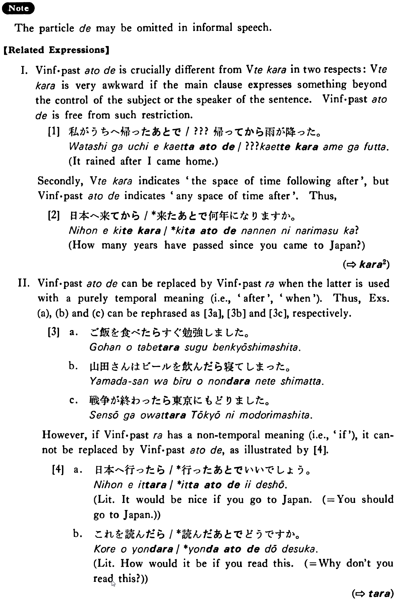

←
DoJG
→
あとで
(B. 78)
Example sentences
(ksa).
メイソンさんは日本へ行った
あとで
病気になった・なりました。
Mr. Mason became ill after he went to Japan.
(ksb).
私は授業の
あとで
図書館に行った・行きました。
After the class I went to the library.
(a).
ご飯を食べた
あと（で）
すぐ勉強しました。
I studied right after I had eaten my meal.
(b).
山田さんはビールを飲んだ
あと（で）
寝てしまった。
Mr. Yamada fell asleep after he drank beer.
(c).
戦争が終わった
あと（で）
東京に戻りました。
I went back to tokyo after the war ended.
(d).
食事の
あとで
テニスをした。
I played tennis after my meal.
Formation
Vinformal past
あとで
話した
あとで
After someone has talked/had talked
食べた
あとで
After someone has eaten/had eaten
Noun
のあとで
勉強
のあとで
After study
